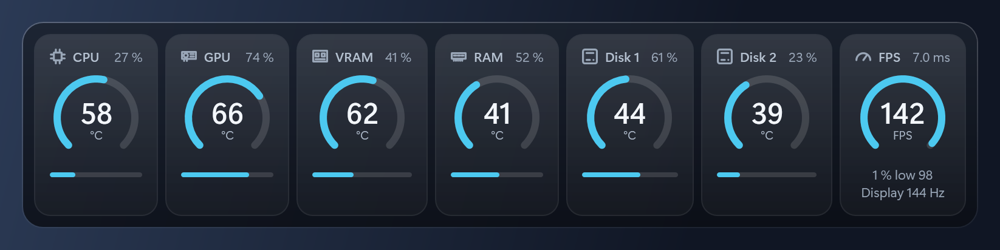
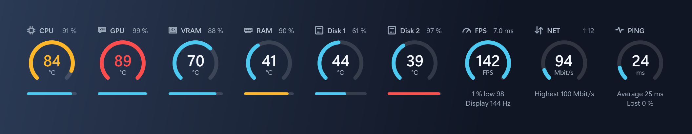
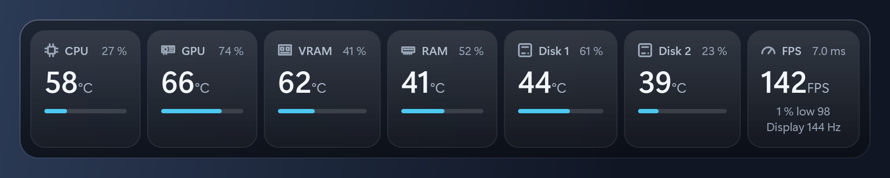

What it shows
-
Temperatures and load
CPU, graphics card, video memory, RAM and every disk, as a temperature and a load or fill level.
-
Frame rate
FPS of the game in front, the time between frames, the one percent low and the refresh rate of your monitor. Nothing is injected into the game.
-
Network
Download and upload speed with the highest download seen, and ping to an address you choose. Both are off until you switch them on.
-
Alerts
A reading turns yellow as the temperature nears its limit and pulses red once the limit is passed. The limits and colors are yours to change.
-
Your look
Ring gauges, compact tiles or one line of text per device. Size, colors, opacity and the boxes around the tiles are all adjustable.
-
Out of the way
Always on top, never takes focus and clicks pass through to the game. Hotkeys work in games and ten languages are included.
Looks



Questions
Does it work in my game?
The frame rate works for games that present their frames through DXGI, which includes DirectX 10, 11 and 12 games. It has been tried with Fortnite. Vulkan and OpenGL games have not been tried, and an ordinary window does not show over old games in true exclusive fullscreen; borderless windows work. Games that are known to work, and those that do not, are collected in a discussion. Please add yours.
Why does Windows warn me about the installer?
The installer is not code-signed yet, so Windows SmartScreen may show a warning. Choose "More info" and then "Run anyway". The installer is built from the source in the repository, and the SHA-256 of every release is in its release notes, so you can check the file you downloaded.
Why does it need administrator rights?
The CPU, memory and disk sensors and the frame rate cannot be read without them. The installer also installs the PawnIO driver, which is how Windows exposes CPU and memory temperatures.
Is it safe to use with anti-cheat?
FrameHeat does not touch the game, but any program that uses a kernel driver can draw attention in some games' anti-cheat. It has been run alongside Fortnite (Easy Anti-Cheat) and no other game, so the risk in other games is unknown.
Does it collect any data?
No. It makes no network connections, with one exception that is off until you switch it on: the ping tile sends a small test message to the address you choose once a second. The settings and a log stay on your computer.
Is it free?
Yes. FrameHeat is free and open source under the MIT license. The source, the build instructions and the full list of limitations are in the README.